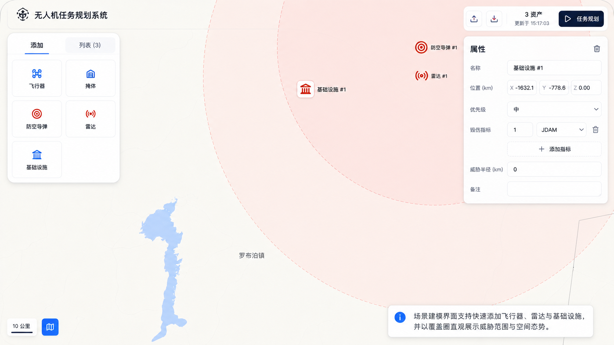
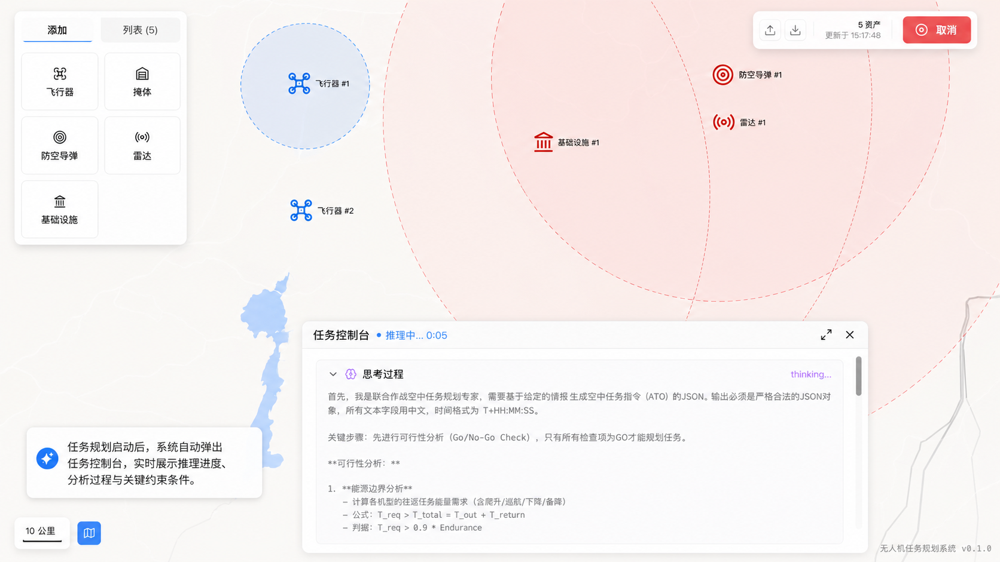
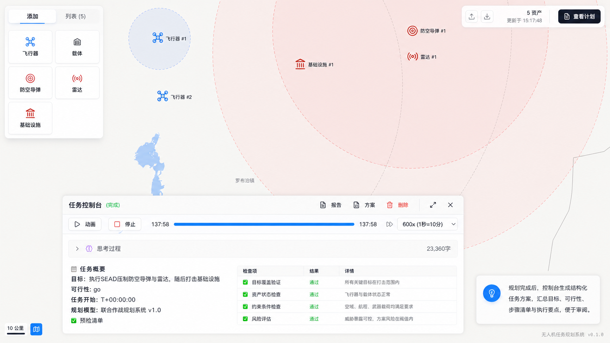
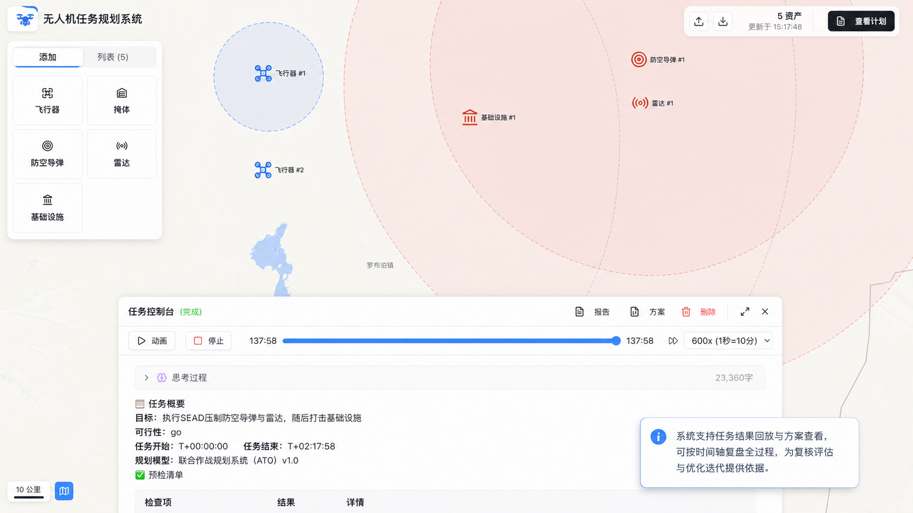
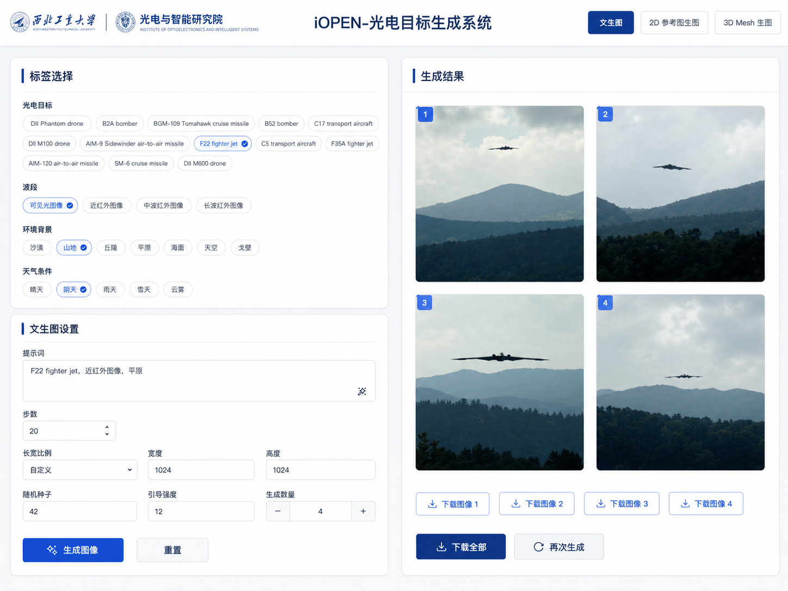
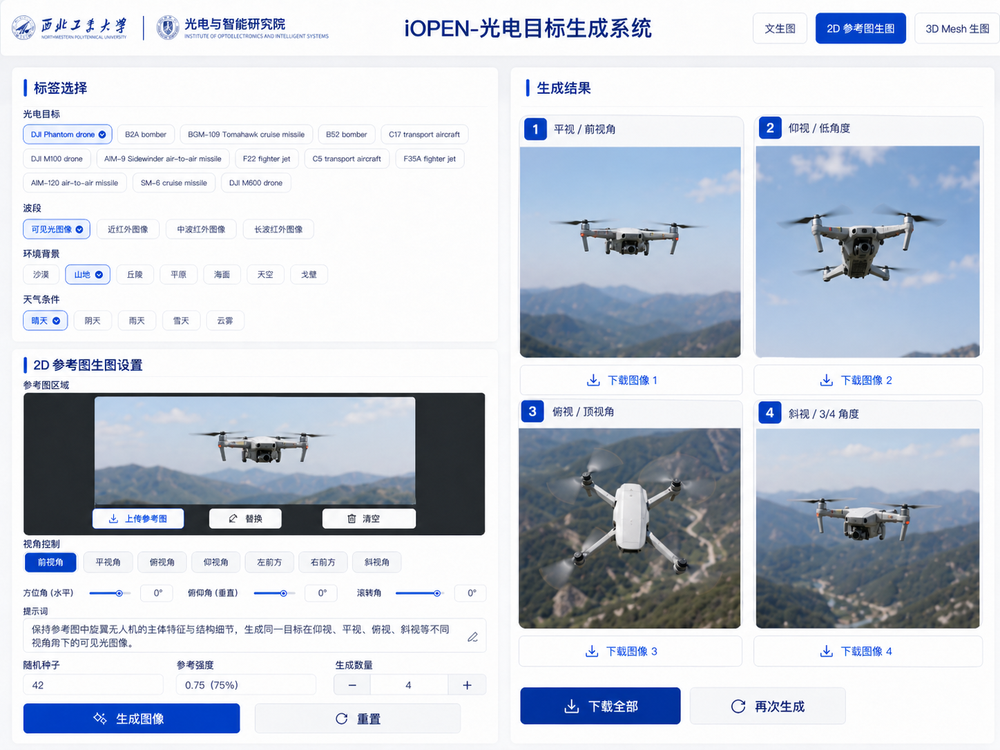
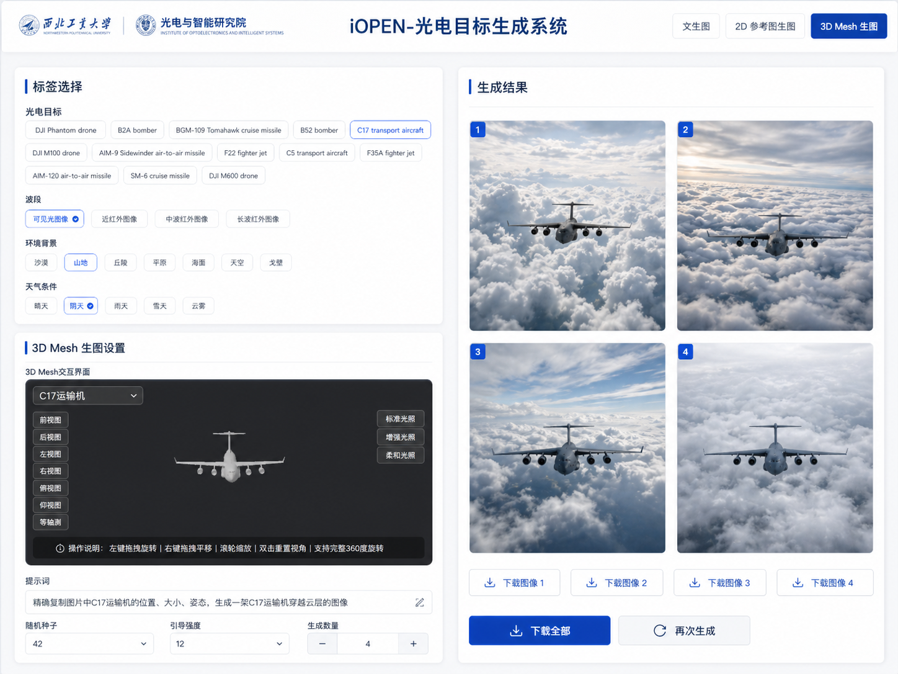
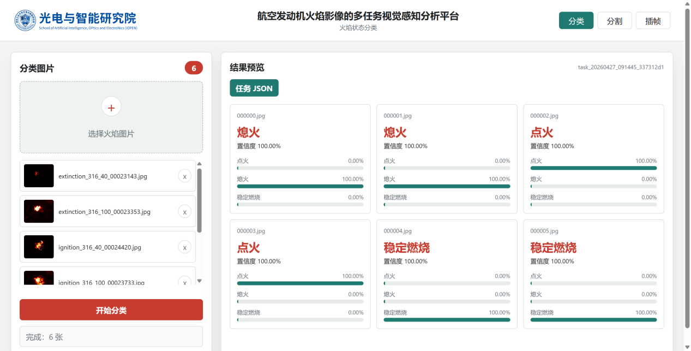
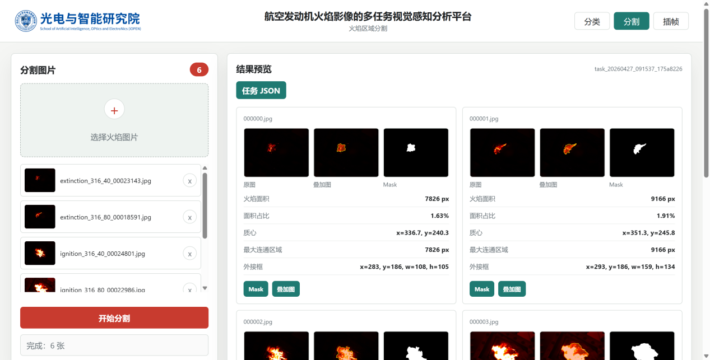
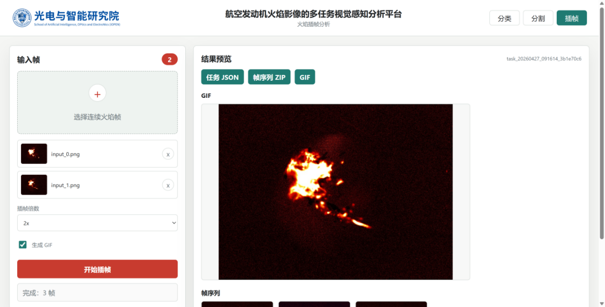

行业应用案例
面向低空智能、光电生成、遥感理解、城市治理与公共空间智能感知等真实场景的成功应用案例。如需进一步了解相关产品，请邮件联系。
UAV Cooperation
无人机协同
系统面向低空多无人机协同感知与自主作业场景，围绕多机协同三维重建和未知环境探索构建端到端能力。通过多视角感知、空间建图、任务分配与轨迹协同，无人机集群可在复杂环境中持续获取场景信息，形成可用于环境理解、路径规划和后续决策的空间表达。
UAV Mission Planning
无人机任务规划系统
系统面向低空复杂场景下的无人机任务筹划与复盘评估，支持在地图上快速添加飞行器、任务目标、感知节点、载体和基础设施等要素，自动生成协同任务方案。任务执行过程中可展示推理过程、可行性检查、预检清单与时间轴回放，并输出结构化报告与方案，为人机协同规划、方案审查和仿真复盘提供支撑。




Optoelectronic Image Generation
多波段光电图像生成系统
系统主打多波段光电图像的可控生成，面向目标仿真与样本构建需求，将目标类别、成像波段、环境背景、天气条件、参考图结构与三维姿态等因素显式纳入生成过程。文生图、2D 参考图生图与 3D Mesh 生图分别从语义标签、参考图约束和三维几何三个角度实现可控生成，为目标识别、变化检测和仿真评测提供可调、可复现的数据支撑。



Flame Image Analysis
发动机燃烧室高旋流火焰分析平台
平台面向航空发动机燃烧室高旋流火焰图像的多任务视觉感知与分析，支持单张或多张火焰图像上传，并提供火焰状态分类、火焰区域分割和火焰图像插帧等能力。系统可自动识别点火、稳定燃烧和熄火等状态，输出火焰分割 mask、火焰面积、质心与最大连通区域等结构化结果，并支持 2x、4x、8x 插帧生成完整帧序列与 GIF 动图，为火焰演化分析、燃烧状态评估和实验数据整理提供辅助支撑。



Crowd Monitoring
人群监控系统
系统面向商圈、园区、车站、校园和大型活动等民用公共空间，围绕人群密度估计、客流趋势感知、异常拥挤预警与可视化管理构建视频智能分析能力。通过对实时视频流进行人群计数、区域热度分析和时空变化展示，可为公共空间运营、安全管理和应急调度提供辅助决策依据。